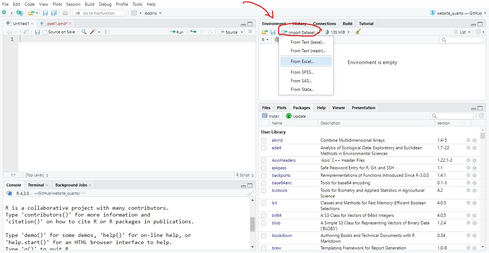
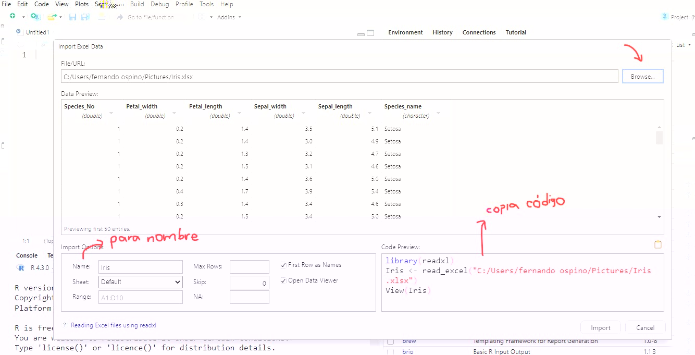

library(readxl)
# pegas la ruta de la carpeta en donde esta el archivo
# setwd("ruta de la carpeta donde esta el archivo")¿Cómo abrir bases de datos en R y observar su estructura?
Tips
bases de datos
Bases de datos en formato .csv, .xlsx, .txt

Antes de empezar con la exploración de los datos. Debemos aprender a leer los datos y conocer su estructura; cuántas observaciones tenemos, número de columnas y que variables son cuantitativas y cuales cualitativas.
Abriendo bases de datos
En el panel del Enviroment nos dirigimos a la opción Import Dataset y seleccionamos el tipo de archivo, si es un documento .xlsx, .txt o csv. Esto nos abrirá una ventana emergente y seleccionaremos nuestra base de datos a visualizar.

En esta ventana emergente, una vez que tengamos seleccionada nuestra base de datos procedemos a copiar el código que aparece en la parte inferior y lo pegamos en nuestro script. Así cada vez que quieras abrir la base de datos solo debes correr el código.

Nota
Cuando le das en Import Dataset From text (base) es para archivos en formato .txt y From Text (readr) es para archivos .csv en el que las columnas están separadas por puntos y no comas.
Abriendo bases de datos con código
También puedes abrir bases de datos escribiendo el siguiente código en tu script
Datos de Excel
Cuando pegas la ruta cambia el signo \ por este /
library(readxl)
# luego ejecutas el siguiente comando
1datos<- read_excel("Iris.xlsx")
# observar la estructura de nuetro dataset
2str(datos)- 1
- Entre paréntesis agregas el nombre de la base de datos
- 2
-
Otra opción para observar la estructura es
glimpse()
tibble [150 × 6] (S3: tbl_df/tbl/data.frame)
$ Species_No : num [1:150] 1 1 1 1 1 1 1 1 1 1 ...
$ Petal_width : num [1:150] 0.2 0.2 0.2 0.2 0.2 0.4 0.3 0.2 0.2 0.1 ...
$ Petal_length: num [1:150] 1.4 1.4 1.3 1.5 1.4 1.7 1.4 1.5 1.4 1.5 ...
$ Sepal_width : num [1:150] 3.5 3 3.2 3.1 3.6 3.9 3.4 3.4 2.9 3.1 ...
$ Sepal_length: num [1:150] 5.1 4.9 4.7 4.6 5 5.4 4.6 5 4.4 4.9 ...
$ Species_name: chr [1:150] "Setosa" "Setosa" "Setosa" "Setosa" ...Datos CSV
library(tidyverse)
datos<- read.csv2("Iris.csv", header = TRUE)Datos en extensión .txt
data <- read.table(file = "Iris.txt", header = TRUE)
3head(data)- 3
- Con este comando puedes observar las 6 primeras filas del dataset
Species_No Petal_width Petal_length Sepal_width Sepal_length Species_name
1 1 0,2 1,4 3,5 5,1 Setosa
2 1 0,2 1,4 3 4,9 Setosa
3 1 0,2 1,3 3,2 4,7 Setosa
4 1 0,2 1,5 3,1 4,6 Setosa
5 1 0,2 1,4 3,6 5 Setosa
6 1 0,4 1,7 3,9 5,4 SetosaEspero que te haya servido de ayuda estos consejos 😀
Citation
BibTeX citation:
@online{o.2023,
author = {O., Daniela},
title = {**¿Cómo Abrir Bases de Datos En {R} y Observar Su
Estructura?**},
date = {2023-06-10},
url = {https://labiocolombianita.netlify.app/aprendeR/post1/post1.html},
langid = {en}
}
For attribution, please cite this work as:
O., Daniela. 2023. “**¿Cómo Abrir Bases de Datos En R y Observar
Su Estructura?**.” June 10, 2023. https://labiocolombianita.netlify.app/aprendeR/post1/post1.html.